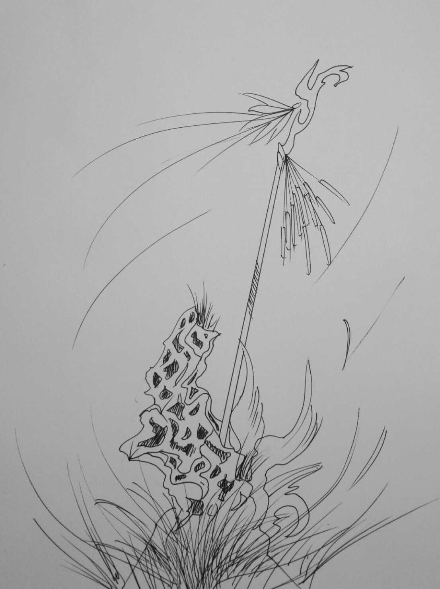

不曉得這個行不行得通
一個正在旅行的遊客，在一座陌生的綠林裡走著；她疲憊得看著四周的景色，盡是一幕又一幕相同的綠色枝葉和大樹。這時的她，發現自己已經搞不清楚自己到底在哪個地方了。
她四處探望，試圖尋找顯眼的東西來當作地標以方便找路；她看見了一棵較高的樹，立刻上前去定位方位。但她正走近那棵大樹的時候，她瞧見了一座滿是坑洞的石像，旁邊插了一根掛了一排木棒的竿子，這個奇怪的石像一下就吸引了她的注意。
這時一陣風吹過，被風吹拂的石像和竿子突然發出奇特的樂聲，遊客嚇了一跳；她上前查看，才發現樂聲是風吹過了石像的坑洞，及竿子上的木棒串發出的。這件事讓她頗為驚喜，聽著這個石像的樂音，她發現原本精疲力盡的身體已經恢復精神，原本痠麻笨重的腳也變得輕盈，而且頭腦也清楚了起來。
她發現石像四周的花草和樹木，都比森林裡其餘地方來得有生氣；風不斷得吹過森林，石像和竿子也不斷地奏出樂音，樂音隨著風傳遍了森林的角落。凡是樂音傳到的地方，無一不變的活力十足。遊客聽著樂音，感嘆著這些音色帶來的巨大變化；這個時候她發現石像附近有一條由花構成的小徑，她發現風就是朝這個方向吹過去，便決定往那條路走。
走著走著，石像的樂聲逐漸消失，但風卻變得越來越強勁，不斷催促遊客快點走；被風帶著走的遊客控制不住自己的腳步，一不小心就跌倒了。她起身回頭看，小徑已經不見蹤影，風也消失了；這時她才發現自己已經出了森林，這裡則是她進入森林時的入口，她完全搞不清楚這是怎麼回事。
後來，她不斷的查詢資料想搞清楚那是甚麼樣的東西，但始終沒有收穫；她後來又數次來到那座森林想尋找關於那個石像任何線索，也沒有任何結果。也許，這就是那種只有緣分到了才能遇見的東西吧。